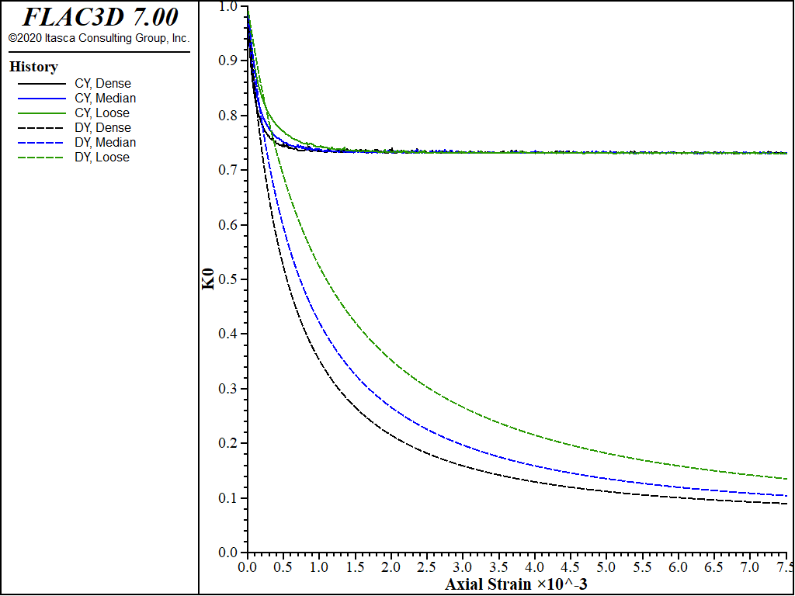
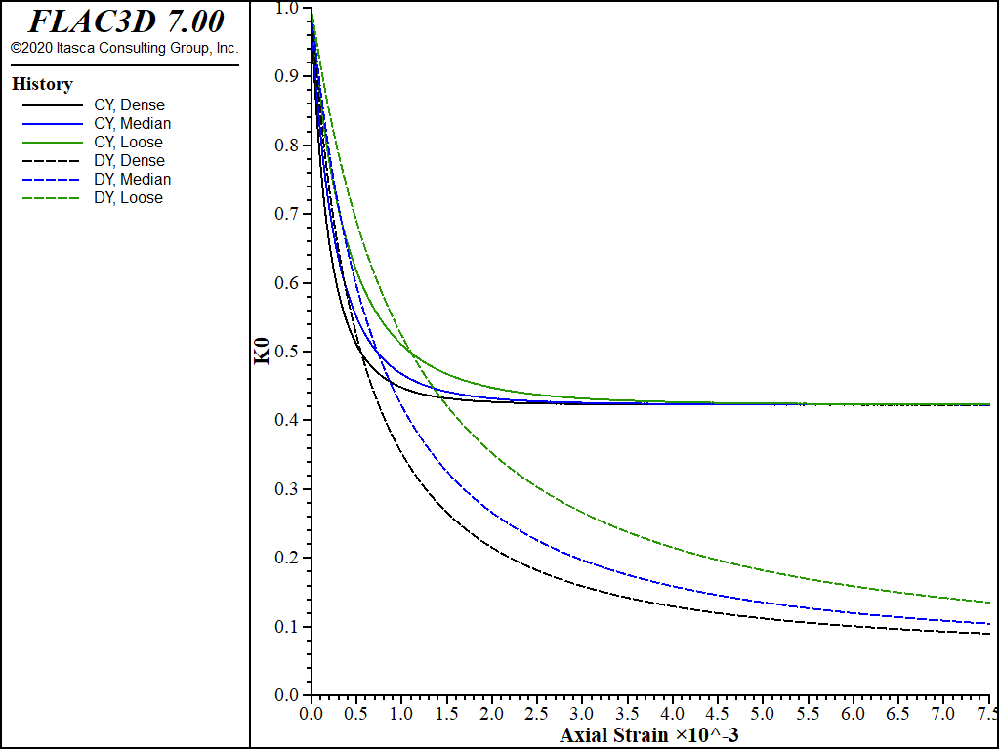
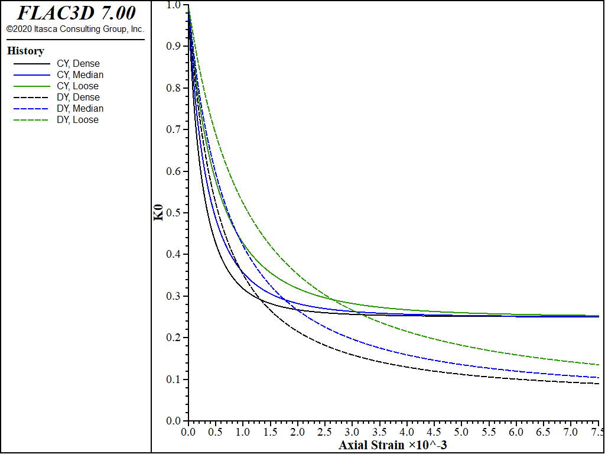

采用 CYSoil 模型的固结仪试验
注意
要在 FLAC3D 中查看此项目，请使用菜单命令 。 选择“ConstitutiveModels/ OedometerCYSoil”并选择“OedometerCYSoil.f3dprj”以加载。 该项目的主数据文件见本示例末尾（main data file）。
使用 CYSoil 模型（CYSoil model）针对不同参数 \(\alpha\) 值进行固结仪试验模拟，以评估当帽盖上发生屈服时帽盖纵横比对围压的影响。 试验所考虑的 \(\alpha\) 值为 0.5、1、1.5 和 1020（即与 1 相比非常大的值，此时 双屈服模型（double-yield model） 的行为得以再现）。
除 \(\alpha\) 外，我们采用与各向同性 压缩示例（isotropic compression example）相同的设置和特性，不同之处在于本例的模拟 采用平面应变，侧向边界固定，以模拟固结仪试验条件。 摩擦角被赋予很大的值以防止剪切屈服。
围压与竖向应力之比 \(\sigma_{xx}\) / \(\sigma_{yy}\)（即应力比 \(K_0\)）随轴向应变的变化，针对密砂、中密砂和松砂分别绘于三幅图中： 图 1（Figure 1） 比较 \(\alpha\) = 0.5 与 \(\alpha\) = \(10^{20}\)（双屈服模型）的预测结果； 图 2（Figure 2） 比较 \(\alpha\) = 1.0 与 \(\alpha\) = \(10^{20}\)（双屈服模型）的预测结果； 图 3（Figure 3） 给出 \(\alpha\) = 1.5 与 \(\alpha\) = \(10^{20}\)（双屈服模型）的结果。
固结仪模拟结果表明，在给定特性下， CYSoil 模型所达到的 \(K_0\) 高于双屈服模型。 并且对所有试验，帽盖纵横比越低，所达到的 \(K_0\) 越高。此外，随着变形发展，密砂、中密砂和松砂收敛到相同的最终 \(K_0\) 值， 且 CYSoil 模型比双屈服模型 以更快的变形速率达到该值。


图 1：密砂、中密砂和松砂的 \(K_0\) 与轴向应变的关系——\(\alpha\) = 0.5（实线）和双屈服模型（虚线）。


图 2：密砂、中密砂和松砂的 \(K_0\) 与轴向应变的关系——\(\alpha\) = 1.0（实线）和双屈服模型（虚线）。


图 3：密砂、中密砂和松砂的 \(K_0\) 与轴向应变的关系——\(\alpha\) = 1.5（实线）和双屈服模型（虚线）。
数据文件
OedometerCYSoil.dat
model new
model title "Oedometer test - dense, medium, loose sand - CYSoil and DY"
model large-strain off
;
zone create brick size 3 1 5
zone group 'gcy' range position-x 0 1
zone group 'gdy' range position-x 2 3
zone group 'gnull' range union position-x 1 2 position-z 1 2 position-z 3 4
;
[global _pc0 = 10.]
;
zone cmodel assign cap-yield range group 'gcy'
zone property density=1000 pressure-reference=100. poisson=0.2 ...
multiplier=[2.0/3.0] flag-cap=1 flag-shear=1 friction=89.0 ...
pressure-cap=[_pc0] pressure-initial=[_pc0] range group 'gcy'
;
zone cmodel double-yield range group 'gdy'
zone property density=1000 bulk-maximum=1.e15 shear-maximum=0.75e15 ...
friction=89.0 pressure-cap=[_pc0] multiplier=[2.0/3.0] ...
range group 'gdy'
;
zone cmodel assign null range group 'gnull'
;
program call 'fish' suppress
; 双屈服模型
[cap_table('1', 300.)]
zone property strain-volumetric-plastic=[evp0] table-pressure-cap='1' ...
range group 'gdy' position-z 4 5
[cap_table('2', 225.)]
zone property strain-volumetric-plastic=[evp0] table-pressure-cap='2' ...
range group 'gdy' position-z 2 3
[cap_table('3', 150.)]
zone property strain-volumetric-plastic=[evp0] table-pressure-cap='3' ...
range group 'gdy' position-z 0 1
; 帽盖屈服土模型
zone property shear-reference 300. range group 'gcy' position-z 4 5
zone property shear-reference 225. range group 'gcy' position-z 2 3
zone property shear-reference 150. range group 'gcy' position-z 0 1
;
zone gridpoint fix velocity
zone gridpoint initialize velocity-z -1.25e-7 ...
range union position-z 1 position-z 3 position-z 5
zone initialize stress xx [-_pc0] yy [-_pc0] zz [-_pc0]
;
[_hist_setup]
history interval 100
zone history displacement-z position (0,0,1)
fish history _k0_d_cy
fish history _k0_m_cy
fish history _k0_l_cy
fish history _k0_d_dy
fish history _k0_m_dy
fish history _k0_l_dy
model save 'ini'
; -- alpha = 0.5
zone property alpha=0.5 range group 'gcy'
model step 60000
model save 'al1'
; -- alpha = 1.0
model restore 'ini'
zone property alpha=1.0 range group 'gcy'
model step 60000
model save 'al2'
; -- alpha = 1.5
model restore 'ini'
zone property alpha=1.5 range group 'gcy'
model step 60000
model save 'al3'
⇐ Isotropic Compression Test with CYSoil Model | Drained Triaxial Test with CYSoil Model — Constant Dilation ⇒
| 这些内容对您有帮助吗？… | FLAC3D © 2019, Itasca | 原文更新于 2020 年 10 月 8 日 |
| 版权与免责声明 | ||